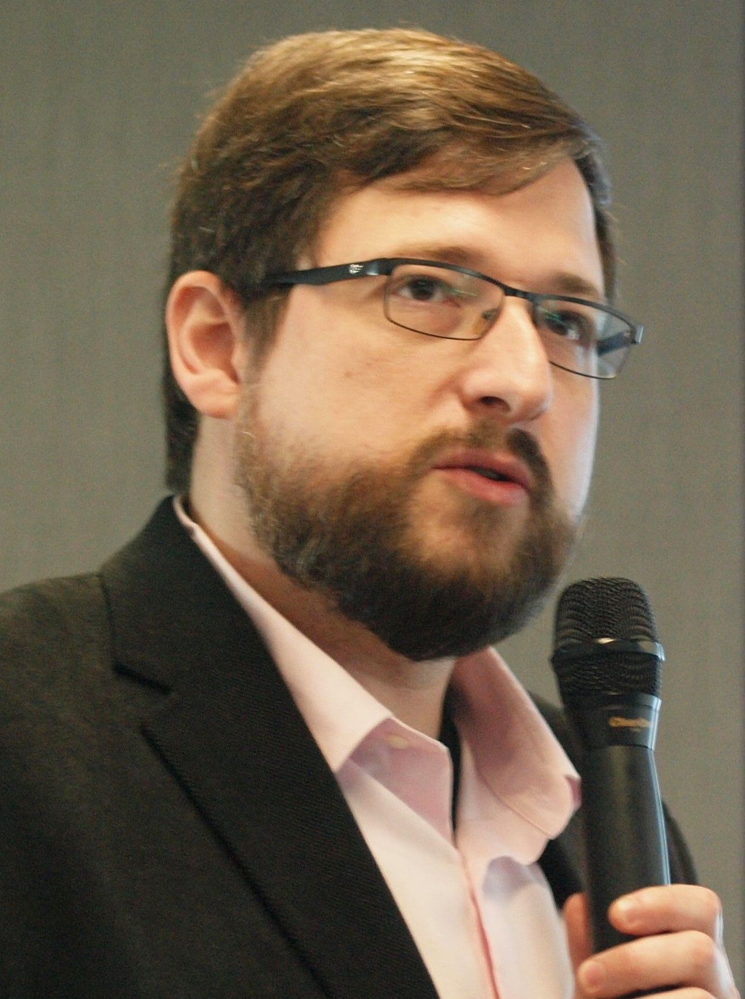

I am a Professor at Friedrich-Alexander-University Erlangen-Nuremberg where I head the Image Data Exploration and Analysis Lab (IDEA Lab) and in the Department of Computing at Imperial College London where I lead the human-in-the-loop computing group and co-lead the biomedical image analysis research group (BioMedIA). We are a post-pandemic, borderless research group, across nations and institutions.
Our research focuses on advancing intelligent algorithms for multi-modal healthcare. We develop new generative and discriminative machine learning methods to enhance diagnostic decision-making, provide real-time guidance to human operators during diagnostic procedures, and explore emerging paradigms such as normative learning to ensure the safety of machine learning and bring its applications to the front lines of patient care.
Our current research questions are:
My teaching is focused on real-time computing, Machine Learning, Image Analysis, Computer Graphics and Visualisation.
I am a scientific advisor for ThinkSono Ltd. and co-founder of Fraiya Ltd..